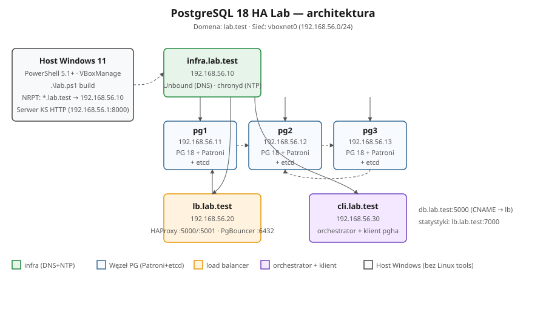
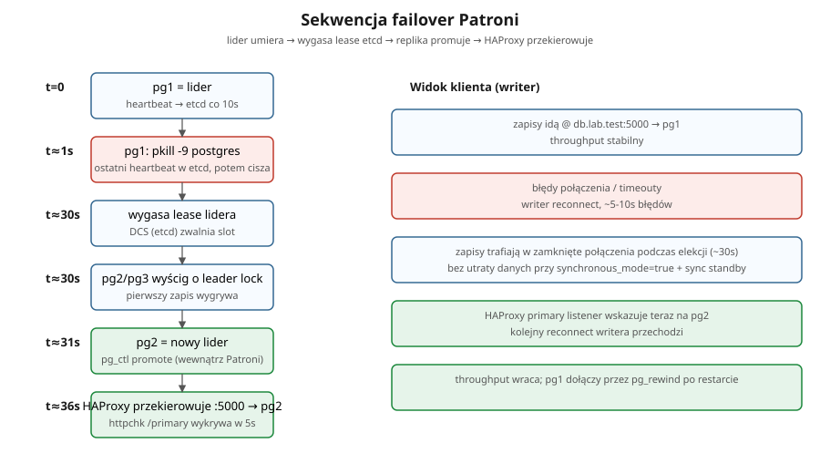
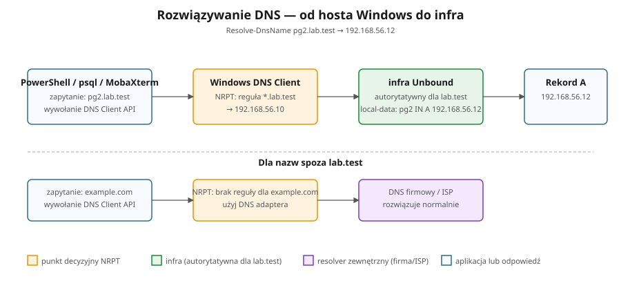

W pełni reprodukowalny klaster HA — Patroni · etcd · HAProxy · PgBouncer na sześciu maszynach Rocky Linux 9.8 — budowany i niszczony z hosta Windows 11, na którym jest tylko VirtualBox. 13 zeskryptowanych scenariuszy awarii dowodzi, że klaster naprawdę to przeżywa.
Czym to jest
Wszystko, czego trzeba, by zobaczyć jak wysoka dostępność PostgreSQL działa — i jak ją złamać — w bezpiecznym, powtarzalnym labie na VM.
Lab stawia klaster PostgreSQL 18 w kształcie produkcyjnym: trzy węzły bazodanowe zarządzane przez Patroni, trójwęzłowy magazyn konsensusu etcd, load balancer HAProxy kierujący zapisy zawsze do aktualnego lidera, pooling połączeń PgBouncer, oraz infrastrukturę Unbound (DNS) i chrony (NTP) — sześć maszyn w prywatnej sieci host-only.
Całość sterowana jest z jednego entrypointu PowerShell (lab.ps1) na Windows 11 — bez
Ansible, bez WSL, tylko VirtualBox. Zbuduj, obserwuj samonaprawę, uruchom serię 13 scenariuszy awarii
i zmierz, jak prawdziwa aplikacja przeżywa failover — co do sekundy.
Sterowane w całości z Windows 11 + VirtualBox. Jeden dispatcher lab.ps1 buduje i usuwa lab.
Zabij lidera, potnij sieć, strać kworum etcd — klaster sam promuje, przekierowuje i dołącza węzły.
Pythonowy klient generuje ciągły ruch przez failover i rejestruje realne okno niedostępności.
Od sanity po kaskadowy podwójny failover i pg_rewind — każdy z automatycznymi asercjami PASS/FAIL.
Architektura
Trzy węzły PostgreSQL, load balancer, węzeł infrastruktury (DNS+NTP) oraz orkiestrator/klient —
wszystko w 192.168.56.0/24.

| VM | Hostname | IP | RAM | vCPU | Rola / komponenty |
|---|---|---|---|---|---|
| infra | infra.lab.test | 192.168.56.10 | 1 GB | 1 | DNS (Unbound) + NTP (chronyd) |
| pg1 | pg1.lab.test | 192.168.56.11 | 4 GB | 2 | PostgreSQL 18.3 · Patroni · etcd |
| pg2 | pg2.lab.test | 192.168.56.12 | 4 GB | 2 | PostgreSQL 18.3 · Patroni · etcd |
| pg3 | pg3.lab.test | 192.168.56.13 | 4 GB | 2 | PostgreSQL 18.3 · Patroni · etcd |
| lb | lb.lab.test | 192.168.56.20 | 2 GB | 2 | HAProxy 2.8 · PgBouncer 1.23 |
| cli | cli.lab.test | 192.168.56.30 | 2 GB | 2 | Orkiestrator · pgha-client (Python 3.11) |
Klocki
Każdy komponent ma jedno zadanie. Razem zapewniają automatyczny failover bez utraty danych.
Trójwęzłowy klaster z replikacją streaming, baza labdb. Replikacja synchroniczna gwarantuje, że zatwierdzony wiersz przeżyje failover.
Nadzorca HA. Odnawia dzierżawę lidera w etcd, promuje replikę przy utracie lidera (~30 s) i uruchamia pg_rewind, by dołączyć stare primary. REST API na :8008.
Rozproszony magazyn konsensusu — „mózg” klastra. Trzyma blokadę lidera (TTL 30 s) i konfigurację. Kworum 2/3 utrzymuje zapisywalność; jego utrata uruchamia failsafe.
pg1 · pg2 · pg3Router TCP używający health-checków REST Patroni: :5000→lider (zapisy), :5001→repliki (odczyty), statystyki na :7000. Przy failoverze przekierowuje automatycznie.
Pooler połączeń przed HAProxy — utrzymuje niski narzut na zapytanie pod obciążeniem.
lbAutorytatywny dla lab.test, rekursywny dla reszty. Rozwiązuje stabilny endpoint aplikacji db.lab.test → lb.lab.test.
Źródło czasu stratum-2 na infra; każdy inny węzeł synchronizuje się z nim — spójne zegary w całym klastrze.
infra → wszystkiePythonowy klient testowy: writer/reader generują ruch i mierzą przerwy oraz downtime; monitor pokazuje live TUI klastra. Napędza scenariusz 13.
Sprzętowy fencing jądra. Gdy zawieszony lider nie odnowi dzierżawy, jądro restartuje węzeł i natychmiast zwalnia blokadę.
pg1 · pg2 · pg3Konfiguracja
Przebieg failoveru


*.lab.test autorytatywnie, resztę rekursywnie.Scenariusze testowe
Każdy to skrypt bash z asercjami PASS/FAIL, uruchamialny pojedynczo
(lab.ps1 scenario NN) lub jako seria. destrukcyjne zabijają
procesy lub VM — klaster się samonaprawia.
| # | Scenariusz | Co dowodzi | |
|---|---|---|---|
| 01 | baseline | Jest lider, etcd 3/3, odczyt+zapis przez HAProxy | bezpieczny |
| 02 | kill-primary-hard | pkill -9 postgres na liderze — zero utraty danych (sentinel przeżywa) | destrukcyjny |
| 03 | poweroff-primary-vm | Host wyłącza VM lidera (VBoxManage) → failover → restart | destrukcyjny |
| 04 | graceful-switchover | Planowy patronictl switchover do sync standby, bez utraty danych | bezpieczny |
| 05 | network-partition | iptables izoluje lidera → failover, partycja samogojąca | destrukcyjny |
| 06 | etcd-single-loss | Stop etcd na 1 węźle — kworum 2/3 trzyma, klaster działa | bezpieczny |
| 07 | etcd-quorum-loss | Stop etcd na 2 węzłach — tryb failsafe (odczyt OK), potem powrót | bezpieczny |
| 08 | replica-restart | Restart Patroni na replice — lider bez zmian, szybki rejoin | bezpieczny |
| 09 | pg-rewind-old-primary | Stare primary dołącza przez pg_rewind po rozjeździe linii czasu | bezpieczny |
| 10 | sync-vs-async | Przełączanie synchronous_mode — kompromis trwałość vs dostępność | bezpieczny |
| 11 | multi-host-libpq | Failover bez drivera: libpq target_session_attrs=read-write sam znajduje lidera | bezpieczny |
| 12 | cascading-failure | Zabij lidera, potem nowego lidera — wybrany zostaje trzeci | destrukcyjny |
| 13 | app-failover-continuous | Ruch pgha-client przez zabicie lidera — pomiar downtime od strony aplikacji | destrukcyjny |
Wyniki
Cała suita (01–13) została wykonana agentowo na żywym klastrze — przez SSH, a akcję hosta dla
scenariusza 03 napędził VBoxManage. Klaster nie był resetowany między scenariuszami; przez
cały czas sam się odbudowywał.
Writer wstawiał dalej (500 inserts, 1 outage, 3 reconnecty); HAProxy przeniósł zapisy na nowego lidera, a aplikacja wznowiła pracę automatycznie.
Reader widział rosnące zatwierdzone wiersze max_id 1821 → 2337 przez failover — replikacja nie stanęła.
W kill-primary-hard wiersz zatwierdzony przed zabiciem przetrwał — replikacja synchroniczna dotrzymała obietnicy.
| Objaw | Przyczyna | Naprawa |
|---|---|---|
switchover --master → No such option | Patroni 4.x usunął --master | użyj --leader |
edit-config --apply '{json}' błąd | --apply oczekuje pliku, nie inline JSON | zapis pliku tymczasowego |
| 412 — candidate ≠ sync_standby | tryb sync wymaga sync standby jako kandydata | wybór sync_standby + fallback |
| zapis pada zaraz po failoverze | nowy lider czeka na nowy sync standby | wait_writable + bufor |
lider się nie zmienił po pkill | Patroni restartuje postgres przed wygaśnięciem dzierżawy | dodatkowo systemctl stop patroni |
skażony id sentinela | psql dokleja wiersz tagu polecenia | head -n1 |
| scenariusz zawisł, węzeł odcięty | iptables DROP odciął też hosta | samogojący timer na węźle |
| drugi failover nie nastąpił | drugie zabicie przed odtworzeniem sync standby | wait_writable między zabiciami |
Szybki start
Jeden dispatcher, kilka czasowników. Pełny przewodnik w QUICKSTART_PL.md · budowa ręczna w MANUAL_INSTALL_PL.md.
# weryfikacja hosta (VirtualBox, RAM, dysk, klucz SSH) .\lab.ps1 prereqs # zbuduj cały lab od zera (~30 min) .\lab.ps1 build # DNS Windows dla *.lab.test (jednorazowo, elevated shell) .\lab.ps1 dns install # pokaż stan VM + klastra Patroni .\lab.ps1 status # uruchom pojedynczy scenariusz albo całą serię (01–13) .\lab.ps1 scenario 13 .\lab.ps1 scenario all # zbuduj interaktywny raport HTML z przebiegu .\lab.ps1 report agentic